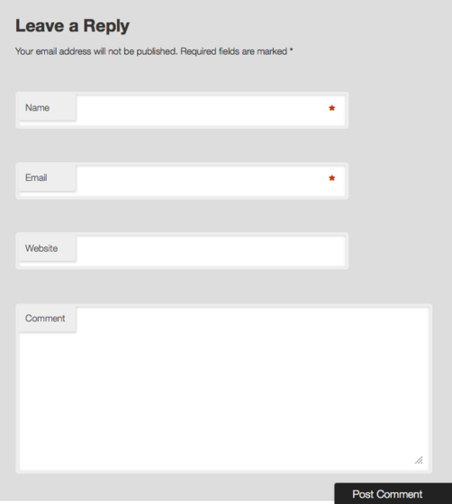

Web Management, 1IK424
Linnéuniversitetet, VT2013
Wordpress part II
Agenda
- The Loop - repetition
- Hur visar jag en post på olika sätt beroende på sammanhang?
- Vad är get_template_part()? Och varför finns den?
- Hur gör jag om jag har fler poster än jag vill visa på en sida
- Hur visar man kommentarer till bloggposten
- Hur visar jag en resultatsida från en sökning?
- Hur kan jag använda widgets för att förenkla?
- Hur skapar jag en dynamisk meny?
The Loop
BILD PÅ THE LOOP CODE - TA PÅ EN VANLIGT CONTENT
Fyll på med fler tempalte tags
BILD PÅ HTML
Olika utseende, olika loopar

TEMPLATE HEIRARKY
När vi anropar en spcifik sida letar wordpress efter något.
VISA BILD!
demo på single
http://codex.wordpress.org/Theme_Development#Template_Files_List
get_template_part()
Vi vill ha möjligheten att ladda in olika filer beroende på hur vi vill att loopen ska köras.
<?php
if (is_single()) :
// det är en single post så jag laddar in templaten som visar dessa
get_template_part('content', 'single'); // kommer leta efter filen content-single.php
else :
// Annars så visar jag listan med poster i loopen som vanligt
get_template_part('content'); // kommer ladd ain filen content.php
endif; ?>
Conditional Tags
Används t.ex. för att avgöra vad för typ av sida som efterfrågats!
- Startsidan? - is_home()
- Är det en enskild post? - is_single()
- Vill man lista kategorier? - is_category()
- Med många fler....
Enda sättet att vet a vad man kan göra och kolla av är att läsa på:
http://codex.wordpress.org/Conditional_Tags
När antalet poster blir för lång
Vad händer när jag har 100 inlägg?

Som default hämtar Wordpress max 10 poster åt gången i loopen
Hur ändrar jag det? Hur visar jag de andra?
http://codex.wordpress.org/Function_Reference/next_posts_link
Att via en post på olika sätt

Hantera kategorier
Vi vill ge användaren möjlighet att sortera våra inlägg per kategori.
Detta är en typisk uppgift där vi får använda Wordpress codex
http://codex.wordpress.org/Template_Tags/wp_list_categories
SKÄRMDUMP
Att implementera en lista med kategorier
Vi vill i vår "sidebar" inkludera en lista med kategorier så att användaren kan lista endast poster som hör till en viss kategori.
Att låta användaren tycka till
Då wordpress har sina rötter som bloggverktyg finns såklart inbyggt stöd för
kommentarer.
http://wp.tutsplus.com/tutorials/creative-coding/customizing-comments-in-wordpress-functionality-and-appearance/

Hur byter man språk på wordpress?
http://codex.wordpress.org/Installing_WordPress_in_Your_Language#Manually_Installing_Language_Files
- Ladda mer en språkfil (http://svn.automattic.com/wordpress-i18n/sv_SE/tags/3.3.2/messages/sv_SE.mo)
- Skapa katalogen "languages" i mappen wp-content
- Lägg filen i denna katalog
- Öppna filen "wp-config.php" - leta rade på raden define('WPLANG', '');
- Ändra till define('WPLANG', 'sv_SE');
FLAGGBILD
Att implementera en sökruta
Även här finns det inbyggd hjälp i wordpress
get_search_form(); // Ett standard formulär kommer renderas ut
BILD PÅ SÖKRUTA
Självstudie :
http://codex.wordpress.org/Function_Reference/get_search_form
Att använda widgets
Det finns enklare (?) sätt att få viss funktion
För att inkludera widgets i ditt tema behöver du skriva kod i functions.php
för att skapa en "widget area"
Fördelar är att det är enkelt för en administratör att dra och släppa
widgets i sidan.
För att få en yta att lägga till widgets i behöver vi registrera den i functions.php
BILD WIDGETS
Att skapa en widget area och lägga in widgets
Att fixa en dynamisk meny
På liknande sätt som widgets registreras menyer
Nästa gång
- Skapa child themes
- Page templates
- Meta boxes
 Detta verk är licensierat under en
Creative Commons Erkännande-IckeKommersiell-DelaLika 3.0 Unported Licens.
Detta verk är licensierat under en
Creative Commons Erkännande-IckeKommersiell-DelaLika 3.0 Unported Licens.